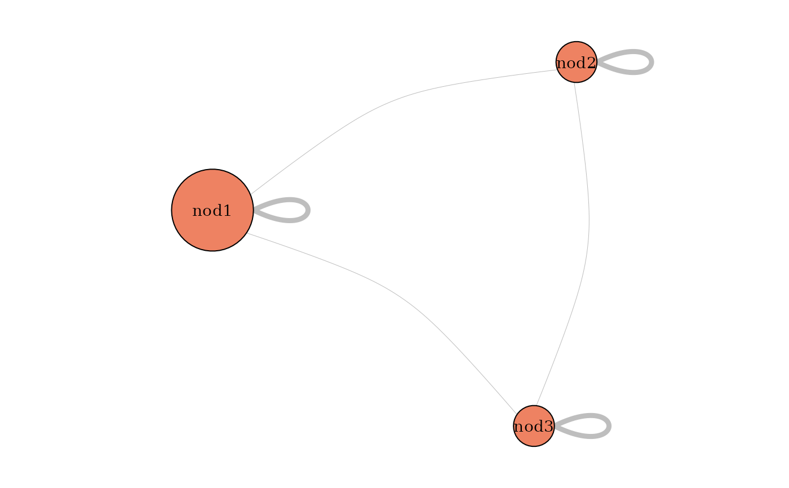
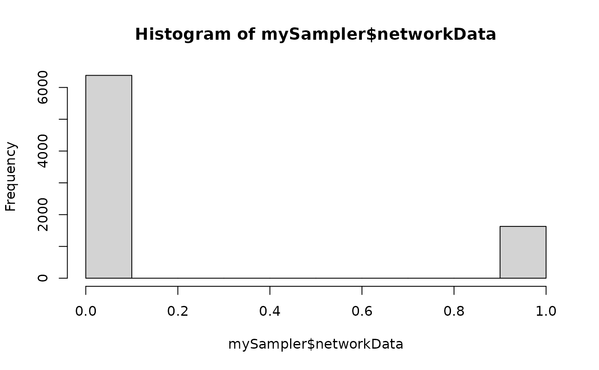
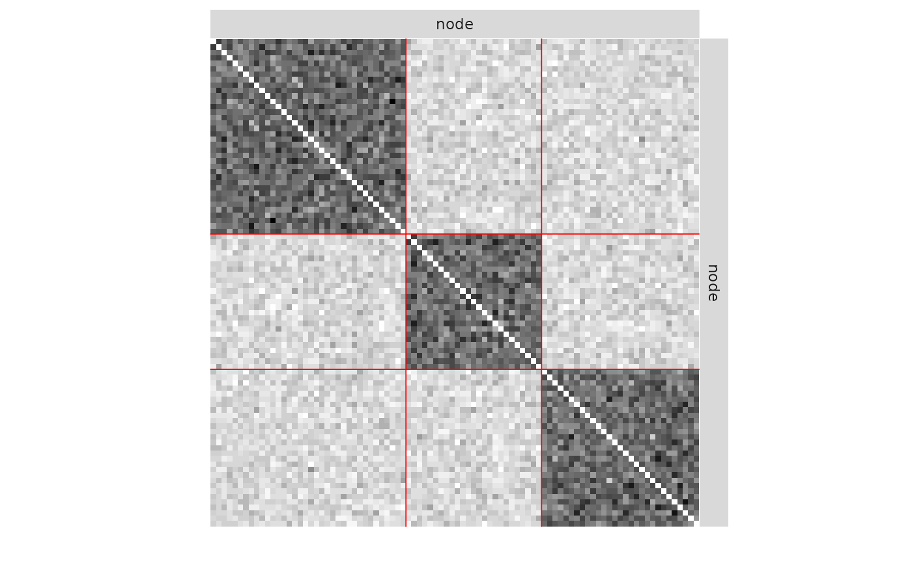
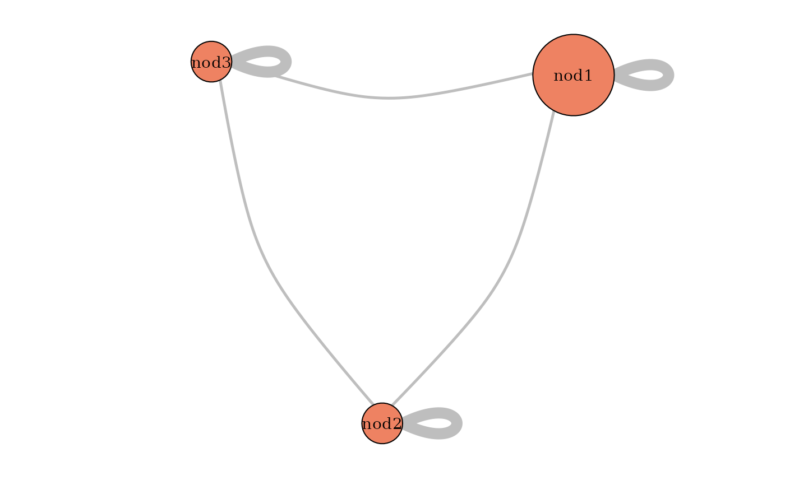
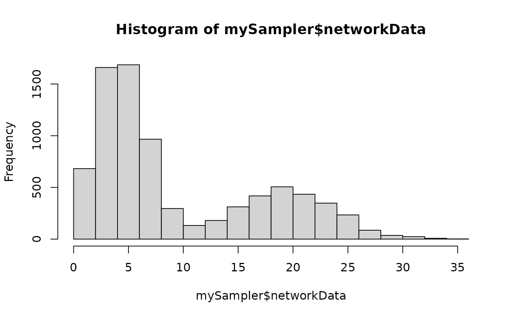
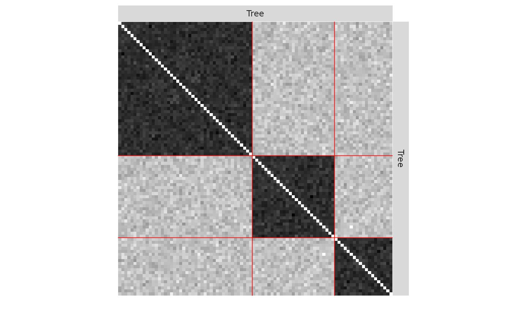
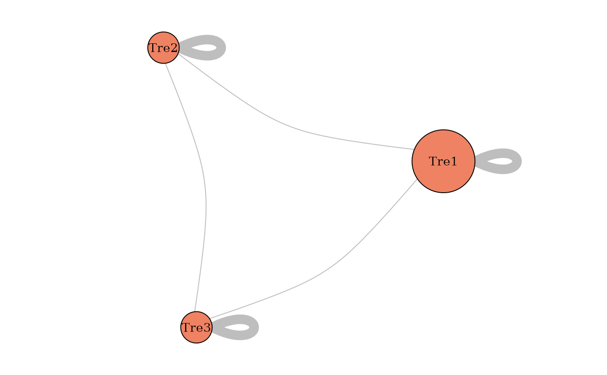

This function samples a simple Stochastic Block Models, with various model for the distribution of the edges: Bernoulli, Poisson, or Gaussian models, and possibly with covariates
sampleSimpleSBM( nbNodes, blockProp, connectParam, model = "bernoulli", directed = FALSE, dimLabels = c(node = "nodeName"), covariates = list(), covariatesParam = numeric(0) )
Arguments
| nbNodes | number of nodes in the network |
|---|---|
| blockProp | parameters for block proportions |
| connectParam | list of parameters for connectivity with a matrix of means 'mean' and an optional matrix of variances 'var', the sizes of which must match |
| model | character describing the model for the relation between nodes ( |
| directed | logical, directed network or not. Default is |
| dimLabels | an optional list of labels for each dimension (in row, in column) |
| covariates | a list of matrices with same dimension as mat describing covariates at the edge level. No covariate per Default. |
| covariatesParam | optional vector of covariates effect. A zero length numeric vector by default. |
Value
an object with class SimpleSBM
Examples
### ======================================= ### SIMPLE BINARY SBM (Bernoulli model) ## Graph parameters nbNodes <- 90 blockProp <- c(.5, .25, .25) # group proportions means <- diag(.4, 3) + 0.05 # connectivity matrix: affiliation network # In Bernoulli SBM, parameters is a list with a # matrix of means 'mean' which are probabilities of connection connectParam <- list(mean = means) ## Graph Sampling mySampler <- sampleSimpleSBM(nbNodes, blockProp, connectParam, model = 'bernoulli') plot(mySampler)plot(mySampler) plot(mySampler,type='meso')  hist(mySampler$networkData)  ### ======================================= ### SIMPLE POISSON SBM ## Graph parameters nbNodes <- 90 blockProp <- c(.5, .25, .25) # group proportions means <- diag(15., 3) + 5 # connectivity matrix: affiliation network # In Poisson SBM, parameters is a list with # a matrix of means 'mean' which are a mean integer value taken by edges connectParam <- list(mean = means) ## Graph Sampling mySampler <- sampleSimpleSBM(nbNodes, blockProp, list(mean = means), model = "poisson") plot(mySampler)  plot(mySampler,type='meso')  hist(mySampler$networkData)  ### ======================================= ### SIMPLE GAUSSIAN SBM ## Graph parameters nbNodes <- 90 blockProp <- c(.5, .25, .25) # group proportions means <- diag(15., 3) + 5 # connectivity matrix: affiliation network # In Gaussian SBM, parameters is a list with # a matrix of means 'mean' and a matrix of variances 'var' connectParam <- list(mean = means, var = 2) ## Graph Sampling mySampler <- sampleSimpleSBM(nbNodes, blockProp, connectParam, model = "gaussian") plot(mySampler)  plot(mySampler,type='meso')  hist(mySampler$networkData)